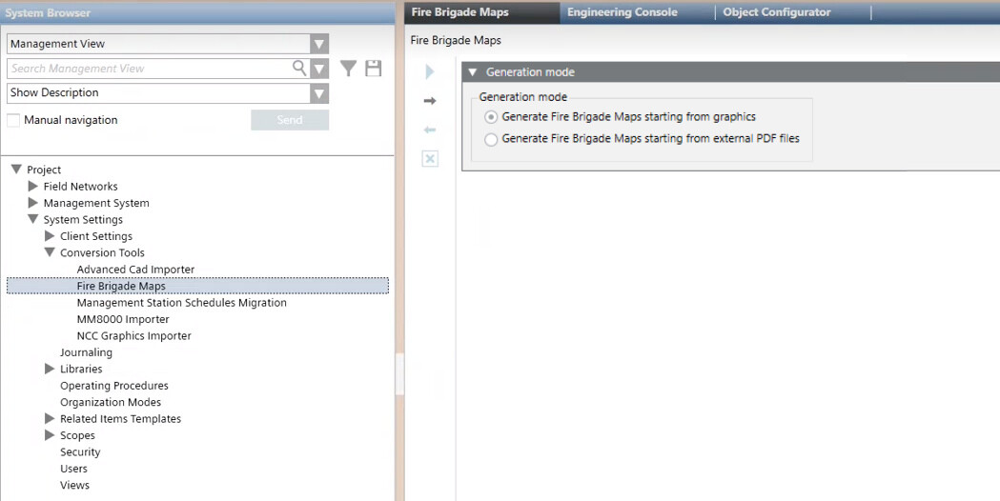
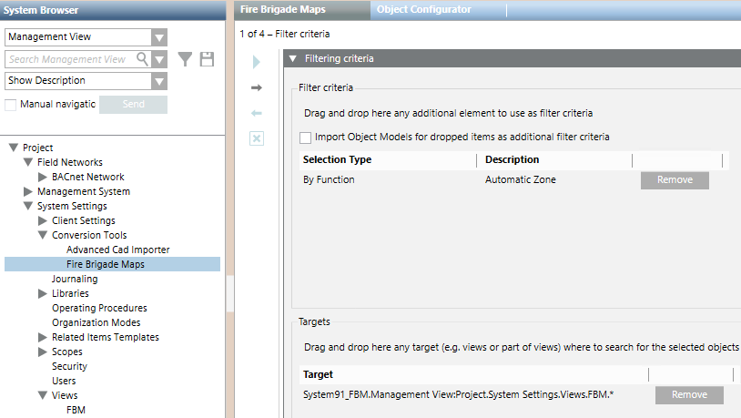
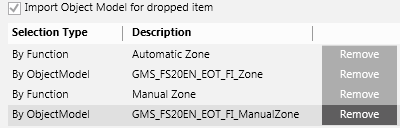
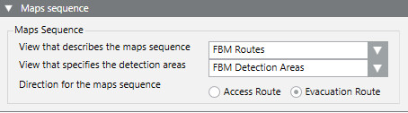
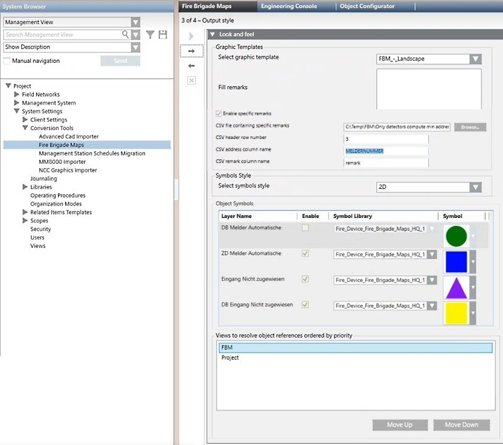
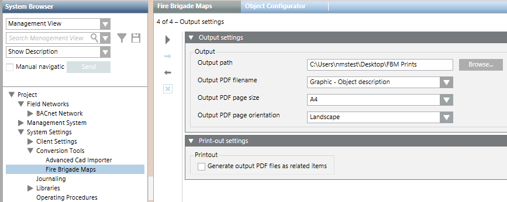
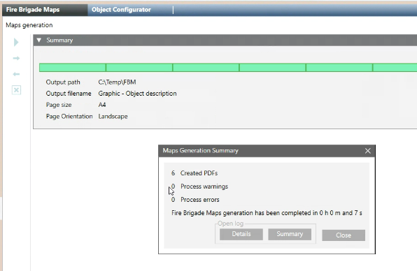

Generating Fire Brigade Maps From Graphics
This procedure covers how to generate fire brigade maps starting from Desigo CC fire graphics. The fire brigade maps generator will produce PDF maps corresponding to the graphics containing fire objects. For general information about the fire brigade maps generator, see the reference section.
Prerequisites
- The following extension module is installed and included in the active project:
- Danger Management > Fire Brigade Maps
- The fire brigade maps option (sbt_gms_opt_fbm) is included in the Desigo CC license. For more information, see Checking license.
The license option enables both the fire brigade maps generation in Engineering mode, and the access to the corresponding documents as Related Items of the fire objects in Operating mode. - A valid graphic template is available in System Settings > Libraries > Fire > Device > Fire Brigade Maps. For more information, see Fire Brigade Maps Template.
- You have configured the Desigo CC graphics that correspond to the required maps, including any layers required for detection areas or access/evacuation routes. In case of routes across multiple graphics, you have also configured the required user-defined views. For detailed information, see Preparing Graphics for Fire Brigade Maps.
- You have defined which types of fire objects are relevant for the fire maps and to be searched for in the graphics.
- You have defined if you want to restrict the map creation to specific segments of the System Browser tree.
- Optionally, you have configured one or more views of the fire system in which to search for the selected objects. These views are used to resolve the placeholder variables specified in the graphic template.
- You have defined the graphic style to use for symbols in the maps. You can create a new style as necessary to properly represent the fire objects (see Customizing the Fire Brigade Map Symbols). In the function or object model of the represented fire objects, make sure to have a symbol associated and set to the style. For more information on symbol styles, refer to the Graphic section.
- System Manager is in Engineering mode.
- In System Browser, Management View is selected.
1 - Select Generation Mode
- In System Browser, select Project > System Settings > Conversion Tools > Fire Brigade Maps.
NOTE: If the Fire Brigade Maps node is not available, select the parent node Conversion Tools and select New > Fire Brigade Maps.
> Fire Brigade Maps. - In the Generation mode expander, select Generate Fire Brigade Maps starting from graphics.
- Click
 to proceed to the next page.
to proceed to the next page.

2 – Select Functions/Object Models and Target
- You are in page 1 of 4 - Filter criteria
In this page you define the types of fire objects for which Fire Brigade Maps will be generated. You can do this based on:
- Functions. For example, use Automatic Zone to get a Fire Brigade Map for each zone. Easily specified by dragging a fire object as an example, this filter is required unless all the objects in the graphics are of the required types.
- Object Model. Narrows down the set of objects to a more specific subset based on the object models. This might be required when multiple object models are involved in the base selection and you want to exclude some of them.
- System Browser Target. Narrows down the set of objects to only consider those in selected parts of the installation, for example one or more buildings or floors.
A fire brigade map will be generated for each fire object of interest that you define through these filter criteria. For more information, see Preparing Graphics for Fire Brigade Maps.
- In the Filter criteria section:
- Drag-and-drop a fire object into the Selection Type area to select the corresponding Function.
NOTE: You can optionally select Import Object Model for dropped item as additional filter criteria. With this option, both the function and object models will be added when you drag a fire object from System Browser. - Repeat the drag-and-drop to add more Functions and/or Object Models.
- You can use Remove to exclude any unwanted items.
- In Targets section, do one of the following:
- Drag any part of the System Browser tree to the Target area to only consider that part of the plant. Repeat the drag-and-drop to add more parts as necessary. You can use Remove to delete any unwanted parts.
- Leave this field empty to get maps of the entire plant.
- Click to proceed to the next page.

NOTE: If you add any object models to the filter, make sure to include all required object models along with all functions. Removing functions or objects models may result in unexpected or incomplete results. Consider for example the selection illustrated in the image below. It includes both functions and object models for automatic zones and manual zones. Removing the Manual Zone object model from the last position would exclude manual zones even if the Manual Zone function remains. Instead, removing both object models would result in including both types of objects because no object model filtering occurs.

3 – Access / Evacuation Routes Sequence
- You are in page 2 of 4 – Access/evacuation routes sequence.
This page is used for obtaining access/evacuation routes across multiple graphics, for example, an access route from the ground floor to the first floor, with the detection area marked on ground floor map. To configure this, you must have previously created two user-defined views:
- One made only of Desigo CC graphics, that specifies the routes among floors to go from the entrance to a specified point in the building and vice-versa, through a hierarchical structure of parent/child graphics. See Multi-Map Access / Evacuation Routes.
- One made of folders (aggregators) and objects of interest (most likely zones and detectors), whose goal is to allow the display of detection areas
NOTE: If you do not require access/evacuation routes across multiple maps, you do not need to configure these views, and the field View that describes maps sequence must be left blank. When you leave this field empty, you will get maps from all graphics that contain the previously selected objects.
- In View that describes the maps sequence:
- Select the view composed of graphics that specifies the route from the entrance to each floor.
- In View that defines detection areas:
- Select the view composed of folders and fire objects that specifies the detection areas.
- Specify the direction: Access Route or Evacuation Route.
- Click to proceed to the next page.

NOTE: The Access Route/Evacuation Route selection determines the order of multiple maps for inward or outward direction.
Any graphical elements connecting the maps (for example lines, arrows, references) should be designed consistently with the resulting order of presentation.
4 – Configure Output Style
- You are in page 3 of 4 – Output style.
- In Graphic Template, select the graphic template to apply.
- In the Fill remarks field you can enter a general remark that will appear in the %Remarks% section of the template. This text is common to all the target objects and will be the same for all the fire brigade maps generated.
- It is also possible to have object-specific remarks that are different in each generated fire brigade map, for example remarks specific to each zone. These remarks will appear in the %Specific_Remarks% section of the template. To do this:
- Prepare a .CSV file specifying the specific remark text that corresponds to each target object (such as a zone or detector). For details on how to construct this file see Fire Brigade Maps Template.
- Select the Enable specific remarks check box.
- Next to CSV file containing specific remarks, click Browse and select the .CSV file prepared previously.
- In the CSV header row number field enter the row in the CSV file which contains the column headers.
- In the CSV address column name field, specify the header of the column containing the object identifiers. For example, zone numbers.
- In the CSV remark column name field, specify the header of the column containing the specific remark text for each object.
- In Symbols Style, use Select symbols style to set the symbols to use in the fire brigade maps. The selected symbols will replace the original symbols in the graphics. The list of available styles may vary depending on the installed extension modules. As a general reference, the following is a list of typical styles:
- Any: generic selection, NOT recommended (select a specific style)
- 2D_EU_AT, two-dimensional symbols for Austria
- 2D_EU_DE, two-dimensional symbols for Germany and DIN-approved graphics
- 2D_NA_NFPA, two-dimensional symbols for North America and NFPA-approved graphics
- 3D, three-dimensional symbols, generic, NOT recommended (select a more specific 3D-style)
- 3D_EU, three-dimensional symbols for Europe
- 3D_NA, three-dimensional symbols for North America
- In Object Symbols, all visible layers that have the Discipline property set to Fire are listed. You can customize it by selecting the Symbol Library and the desired Symbol.
- Clear the Enabled checkbox to use the default symbol set (selected in the Symbols Style).
- If the hidden objects (detectors) have information regarding the mounting type, specify the library and then the graphic symbol that will visually represent the mounting type on the map.
- Check the list in Views to resolve object references ordered by priority. Select a single View and click Move Up or Move Down to change the priority.
NOTE: To avoid unexpected results, change the priority of views carefully and in consistency with the target definition. - Click to proceed to the next page.

5 – Configure Output Settings
- You are in page 4 of 4 – Output settings.
- In Output path, browse for and select the output folder where the PDF files are created.
- In Output PDF filename, choose the desired pattern for naming the PDF map files:
- Parent – Object Description and Name:
<parent object name> <object description> <object name>.PDF - Graphic – Object description:
<graphic name> <object description>.PDF - Date & Time – Object description:
<date> <time> <object description>.PDF - Single Custom Filename:
Enter the filename to generate a single PDF:<filename>.PDF - Single Custom Filename – unique ID:
Enter the filename to generate multiple PDFs with an appended sequential number:<filename> <number>.PDF - In Output PDF page size, choose one of the following:
- Letter
- A4
- A3
- In Output PDF page orientation, choose one of the following:
- Portrait
- Landscape
NOTE: If the Output PDF page orientation choice is not the best option for the layout of the selected graphic template, a dialog box advises you to change. - (Optional) In the Print-out settings expander, in Printout, select Generate output PDF files as related items.
- The Output PDF filename is automatically set to Graphic – Object description.
- The Fire Brigade Maps will be available to display as Related Items in the Document Viewer step for Assisted Treatment.
NOTE 1: While PDF files are created in the specified Output path (where you can manage them for Fire Brigade use), an additional copy is created internally and available from System Browser in Application View > Application > Documents > FireBrigadeMaps > [map folder]. The PDF files are named after the corresponding fire object.
NOTE 2: Every time you re-execute the PDF generation, previous PDF files and all associations with Desigo CC objects are deleted and re-created completely.

6 – Start the Fire Brigade Maps Generator
- You are in page 4 of 4 – Output settings.
- You have set all the output parameters.
- (Optional) If you want to modify any item, click Previous
 in the toolbar to go back to the previous page. After the required modifications, press Next to reach this final page again.
in the toolbar to go back to the previous page. After the required modifications, press Next to reach this final page again. - Click Start
 .
. - The map generation starts. PDF files will be available in the Output folder specified in the previous section.
- The System Manager dialog box appears, click Yes to confirm the start of the maps creation process.
- A progress bar displays. The generation may take a long time, depending on the size of the database. At any time, you can click
 and confirm to stop the procedure.
and confirm to stop the procedure. - If you navigate away, by clicking any other node in System Browser, you will be asked whether to:
- Continue the map generation in background (click Yes)
- Abort (click No)
- Cancel the new node selection and remain in the Fire Brigade Maps generator page (click Cancel).
- When the import procedure finishes, the Import Summary dialog box displays the number of analyzed graphics and symbols as well as the number of maps created in PDF files.
- Click Summary to display the summary log file: [drive]:\Users\[username]\AppData\Local\Temp\FireBrigadeMaps_mm-dd-yyyy_nn.txt. The file provides a report with summary information from the dialog box and any errors or warnings.
- Click Details to display the detailed log file: [drive]:\Users\[username]\AppData\Local\Temp\FireBrigadeMaps Results yyymmdd hhmmss.txt). The CSV file contains a record of all symbols processed.
For examples of log files, see Fire Brigade Maps Generator Log Files.
In case of errors, see Fire Brigade Maps Generator Troubleshooting.
